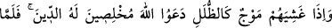
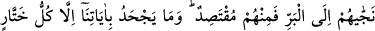
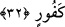
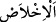

32. Dağlar gibi dalgalar onları kuşattığı zaman, dini tamamen Allâh’a has kılarak
(ihlâsla) O’na yalvarırlar. Allah onları karaya çıkararak kurtardığı vakit içlerinden
bir kısmı orta yolu tutar. Zaten bizim âyetlerimizi, ancak nankör hâinler bilerek
inkâr eder.
“Dağlar” dağ, bulut ve benzerlerinin gölgeleri “gibi dalgalar” büyüklükte gölgeleri,
dağlar veya bulutlar gibi olan deniz dalgaları “onları” yâni gemiye binenleri veya
kâfirleri “kuşattığı zaman, dini” duâ ve itâati “tamamen Allâh’a has kılarak”
samîmiyetle “O’na yalvarırlar.” duâ ederler. Başlarına gelen aşırı korku sebebiyle
fıtrata karşı koyan boş arzu ve taklid duygusunun yok olması yüzünden Allah ile beraber
başka bir şeyi anmazlar ve başkasından imdâd dilemezler.
Keşfü’l-esrâr’da der ki: “Gölgeleyen her şeye “
” denir. Çokluğu ve yüksekliği
bakımından dalga gölgeye benzetilmiştir. Âyette “
(dalga)” bir tane, “
(zulleler)”
ise çoğul kılınmıştır. Çünkü dalga birbiri ardınca gelir.
“
(ihlâs)” bir şeyi bütün şâibelerden/lekelerden arındırmaktır.
“Allah onları” duâlarındaki samîmiyetleri sebebiyle “karaya çıkararak kurtardığı”
arzularını gerçekleştirdiği, onları selâmete eriştirdiği; sahrâ ve kara tarafına çıkardığı
“vakit içlerinden bir kısmı orta yolu tutar.” Yâni ya Allâh’ı birleyen gerçek
mü’minler olurlar veya bu vesîleyle bir kısım aşırılıklardan sakınarak küfürde orta yolu
izlerler.
Bazı müfessirler şöyle demişlerdir: Mekke fethi günü Rasûlullah (s.a.) insanlara eman
vermiş, ancak dört kişiyi bundan hâriç tutmuş, onlar hakkında şöyle buyurmuştu: “Şâyet
o dört kişiyi Kâbe’nin örtüsüne yapışmış halde bulsanız bile onları öldürün. Bunlar
İkrime b. Ebû Cehil, Abdullah b. Hatal, Mıkyes b. Subâbe ve Abdullah b. Sa‘d b. Ebû
Serh’dir.”[101]
Bunlardan İkrime, deniz yoluyla kaçmaya çalışırken şiddetli bir fırtınaya
yakalandılar. Bunun üzerine gemidekiler: “Allâh’a samîmiyetle yalvarın. Çünkü O’ndan
başka taptığınız tanrılar size burada hiçbir fayda veremez” deyince İkrime: “Eğer
denizde beni ancak Allâh’a ihlâsla yalvarmak kurtaracaksa, karada da beni ihlâstan
başka bir şey kurtaramaz. Allâh’ım sana söz veriyorum. Şâyet beni bu sıkıntıdan
kurtarırsan Hz. Muhammed (s.a.)’e gidip elimi onun elinin içine koyacak ve kendisini
mutlaka affedici ve kerem sâhibi olarak bulacağım.” dedi. Bunun üzerine fırtına dindi.
İkrime Mekke’ye dönerek hak dîne girdi ve iyi bir müslüman oldu.
Sa‘dî der ki:
Kaptanı üstündeki elbiseyi yırtıp parçalasa da,